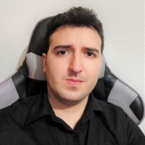
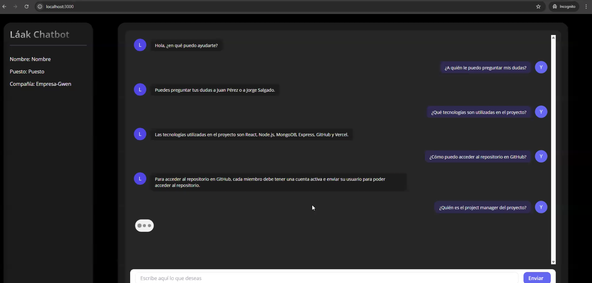

Building intelligent solutions through AI, Robotics and Automation.

Bionics Engineer with a completed Master’s in AI (awaiting official title), with over 5 years of experience in technological innovation.
Specialized in developing and implementing advanced solutions in AI, IoT, and automation, I have led strategic projects and product launches for global companies, optimizing processes and improving efficiency through Python and C++.
Passionate about technology, continuous improvement, and creating positive business impact.
Years Experience
Automation Solutions
Testing Time Reduction
People Reached

Láak Chatbot is an intelligent assistant I developed as a final project for my Master's degree in Artificial Intelligence.
This chatbot was designed to accompany and guide new members through their onboarding process, offering personalized responses aligned with each organization's culture and needs.
With an intuitive interface and a fully personalized approach, Láak Chatbot demonstrates the potential of AI to transform the way we welcome and train people.
2025
Master's Degree Project
Bio-inspired robot with fuzzy control, RealSense vision and YOLO-based pest detection.
Digital platform for monitoring and managing vehicle fleet procedures and compliance.
Ford Programs · 2024 - Present
Intel Corporation · 2020 - 2023
Independent Consultant · 2023 - 2024
Interested in AI, Automation, Robotics or Software Development?
Contact Me